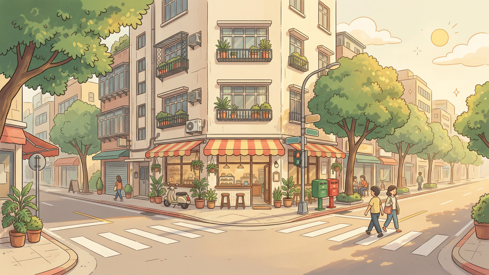
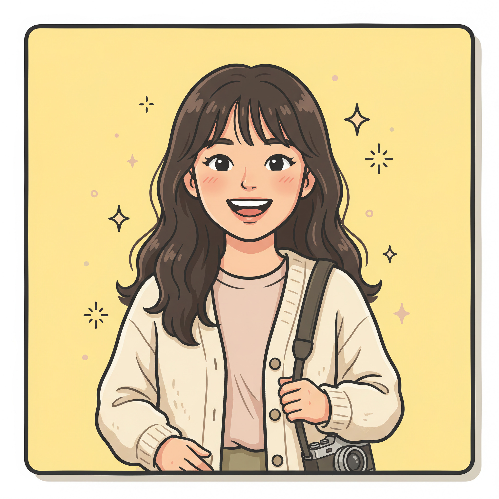
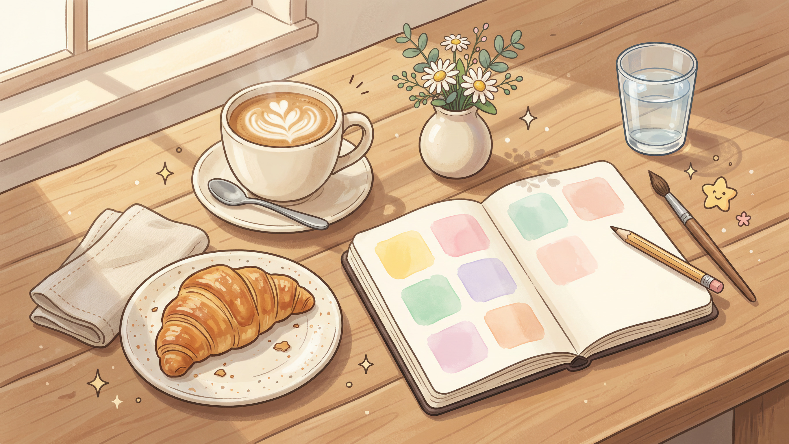

城市光影散步日誌
記錄下課後在街頭捕捉的午後光影、可愛的招牌字體，以及那些讓人會心一笑的城市角落。

哈囉！我是久勻（Angelina），目前是一位大學生。這個網站是我用來存放生活記錄與小靈感的秘密基地。平常喜歡到處走走拍照、觀察有趣的視覺設計，也喜歡記錄下生活中的各種小發現！

記錄下課後在街頭捕捉的午後光影、可愛的招牌字體，以及那些讓人會心一笑的城市角落。

把週末造訪的咖啡廳空間、杯套與甜點色彩整理成專屬色票，當作未來創作的配色靈感庫。